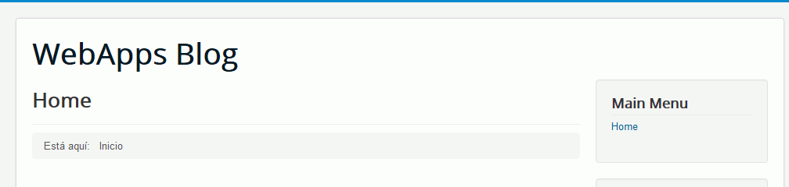
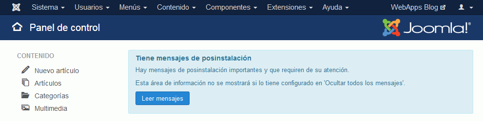
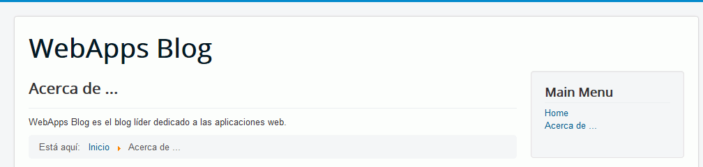
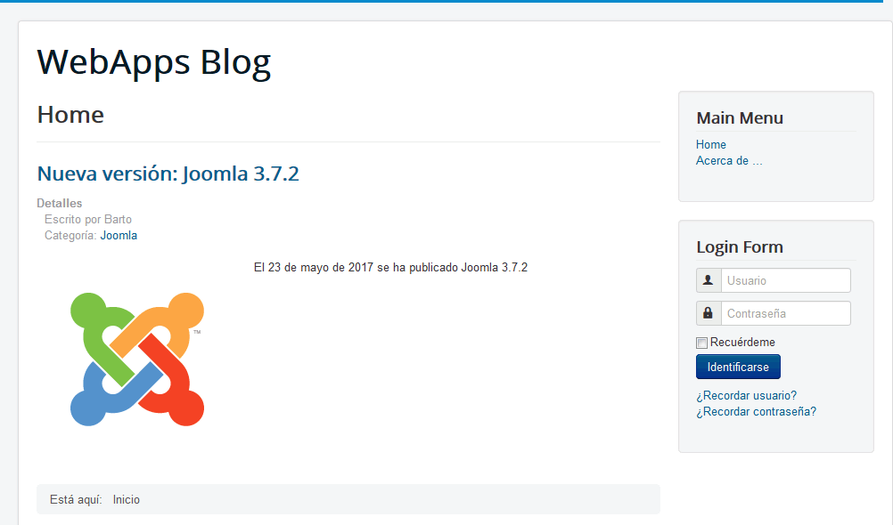
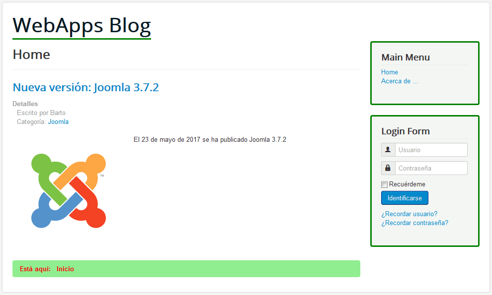
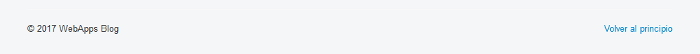
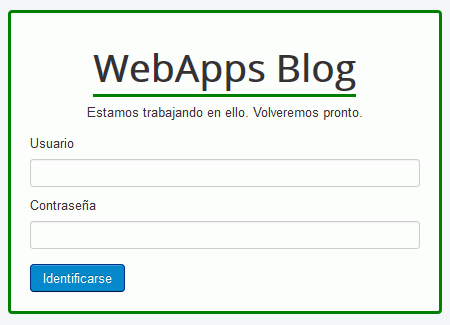

la copia de seguridad de los datos de la aplicación
los ficheros modificados en los ejercicios 7 y 8
la carpeta de la aplicación (comprimida en un zip)
Las capturas deben ser capturas de toda la pantalla en formato png en las que se vea la URL de la página y no quepa duda de que se ha realizado en el ordenador del alumno.
Se deben hacer capturas tanto del resultado obtenido como de la(s) página(s) de administración de la aplicación en las que se resuelven las tareas solicitadas.
Instalar el archivo de idioma español como si fuera una extensión
Activar el idioma español como predeterminado.
Hacer una captura de la pantalla de inicio en español y guardarla como joomla-4-1.png:

Hacer una captura del panel de control en español y guardarla como joomla-4-2.png:

5. Menús
Cree una opción de menú Acerca de.. que muestre una breve presentación. Al hacer clic en la opción de menú se mostrará la presentación.

Haga una captura de esa página.
6. Crear contenido
Cree la noticia de la publicación de Joomla 3.7.2. La noticia se debe mostrar en la página principal, incluir una imagen y en el apartado Detalles se debe mostrar únicamente su nombre y la categoría Joomla.

Imagen:
Haga una captura de esa página.
7. Modificar estilo
Modifique el estilo predeterminado:

Adjunte la hoja de estilo modificada.
8. Modificar traducción
Modifique la traducción:

Para buscar en archivos puede utilizar la opción Buscar > Encontrar en archivos de Notepad++.
Adjunte el fichero modificado.
9. Mantenimiento
Bloquee el acceso al sitio web.

Haga una captura de esa página.
10. Copia de seguridad
Entre en phpMyAdmin como usuario iaw_joomla_1 y exporte la base de datos al fichero su_nombre.sql.